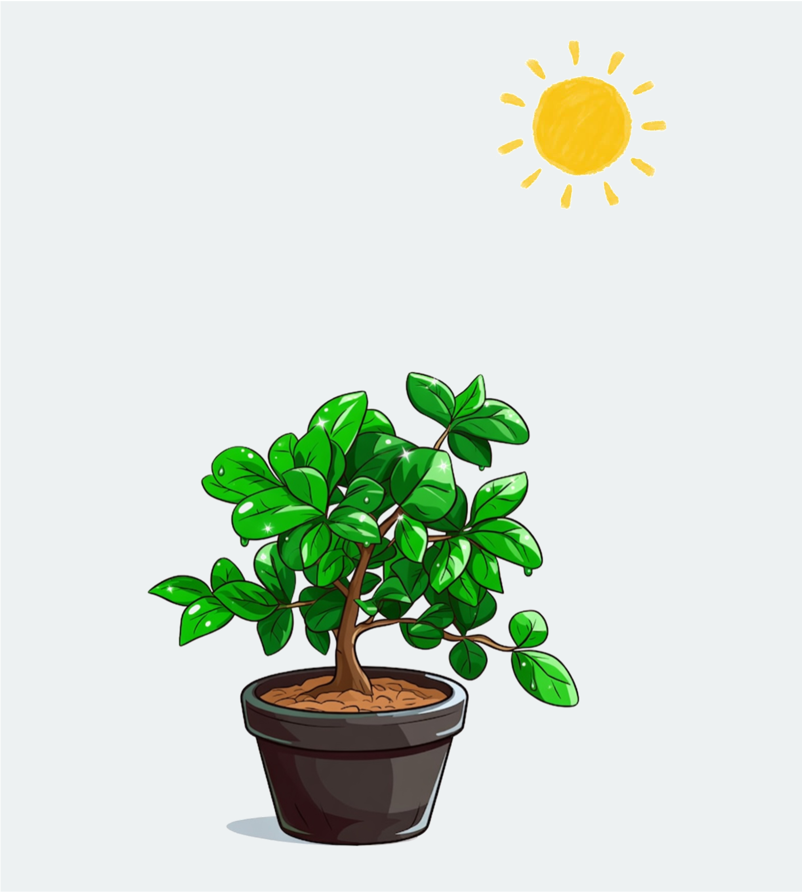

Thank you for visiting

Did you notice that in this simulation, the same volume of water affects soils differently?
For 500 ml of water in 2 liter pot (25% soil water content):
- Clayey Soil remains under-irrigated due to high retention.
- Loamy Soil has a good moisture level for plants.
- Sandy Soil becomes over-irrigated which causes water loss and nutrient leaching.
Start over!